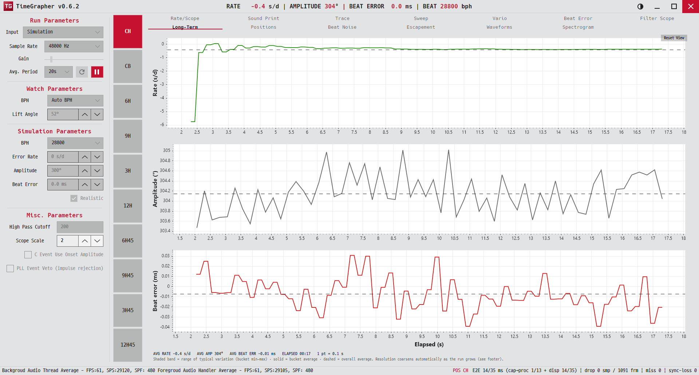

8. Long-Term
레이트·진폭·비트 오차의 장시간(수십 분~수 시간) 추세를 한 화면에 쌓아 봅니다. 노화나 온도 드리프트를 잡습니다.
Stacks the long-run (tens of minutes to hours) trend of rate, amplitude and beat error — catches aging or thermal drift.

용도 · Purpose
짧게는 안 보이는 느린 변화 — 태엽이 풀리며 진폭이 처지거나, 온도에 따라 레이트가 흐르는 현상 — 을 긴 시간축에서 확인합니다.
Reveals slow changes invisible at short range — amplitude sagging as the mainspring unwinds, or rate drifting with temperature — over a long time axis.
무엇이 보이나 · What's shown
세 개의 플롯이 가로축 Elapsed (s)를 공유합니다.
Three plots share the Elapsed (s) horizontal axis.
| 플롯 | Y축 |
|---|---|
| 레이트 (위)Rate (top) | Rate (s/d) |
| 진폭 (중간)Amplitude (mid) | Amplitude (°) |
| 비트 오차 (아래)Beat error (bottom) | Beat error (ms) |
각 플롯에는 구간 평균선, min–max 음영 띠(구간 내 변동 폭), 점선 전체 평균이 함께 그려집니다. 시간이 길어지면 점 간격이 자동으로 넓어지며(해상도 병합) 푸터에 1 pt ≈ N s로 현재 해상도를 알려 줍니다.
Each plot draws a bucket-average line, a min–max band (variation within the bucket), and a dashed overall average. As time grows, points merge (resolution halves) and the footer reports the current resolution as 1 pt ≈ N s.
푸터: AVG RATE … AVG AMP … AVG BEAT ERR … ELAPSED hh:mm:ss … 1 pt ≈ W s.
Footer: AVG RATE … AVG AMP … AVG BEAT ERR … ELAPSED hh:mm:ss … 1 pt ≈ W s.
읽는 법 · How to read
- 평평한 선 = 안정. 시간이 가도 값이 유지됨.Flat lines = stable; values hold over time.
- 기울어진 선 = 드리프트(노화·온도·파워리저브 변화).Sloping lines = drift (aging, temperature, power-reserve change).
- 띠 폭 = 그 구간의 변동량. 넓으면 불안정.Band width = variation in that bucket; wider = less stable.